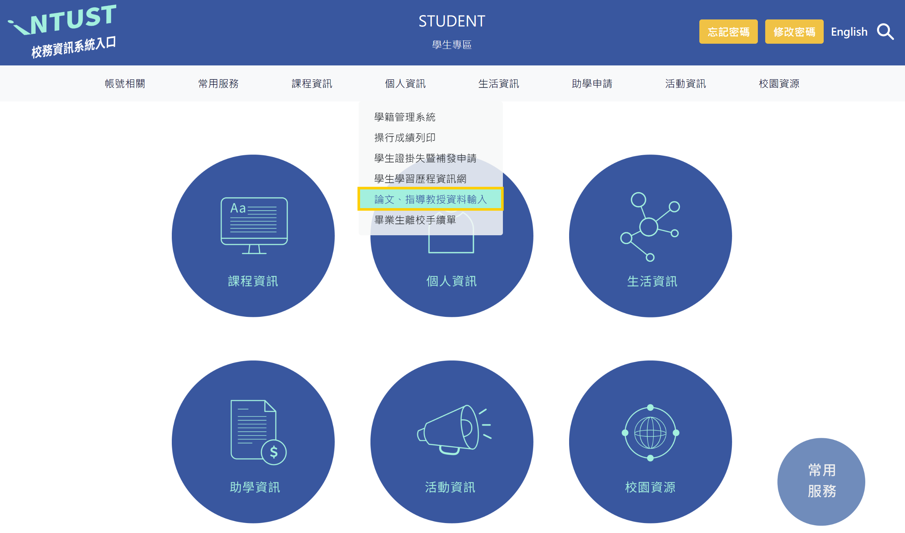
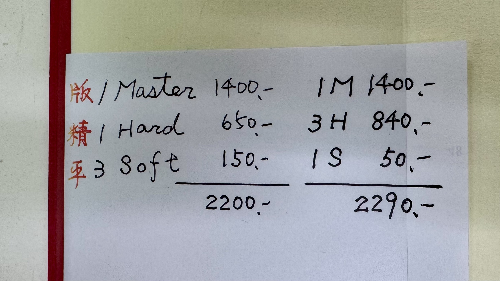
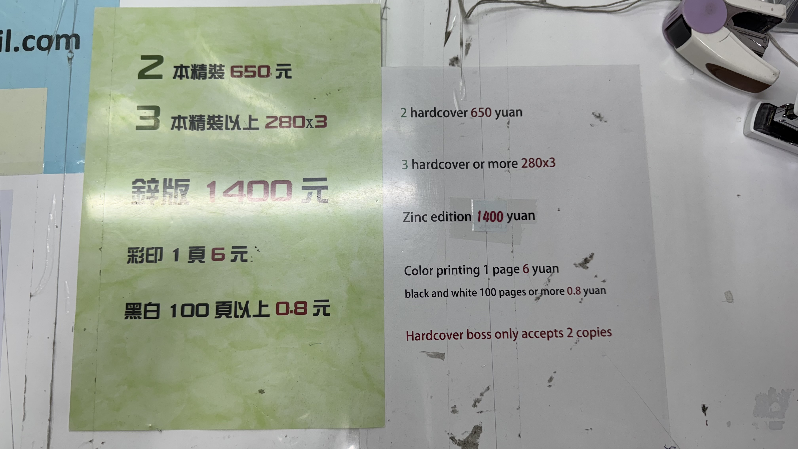

財務金融研究所
Graduate Institute of Finance
🎓財金所順利畢業 SOP
調整字體大小：
1. 入學後一年內
1.1 確認論文指導教授
- Deadline：第一學年結束前（7/31）
-
所需文件：
- 登錄學生資訊系統：指導教授維護 - 論文及指導教授系統
-


2. 口試前
2.1 論文專業領域審查
- Deadline：預計進行論文口試當學期之課程加退選結束前
- 將論文資料登錄學生資訊系統：論文資料維護 - 論文及指導教授系統
-

-
所需文件：

2.2 寫論文
- 撰寫規則：請參考論文撰寫、編排規則及注意事項與論文格式範本
2.3 申請論文口試
- 學校規定論文口試之舉辦期間：
- 第一學期：十月至一月
- 第二學期：四月至七月
- Deadline：財金所規定預定口試日期之前兩週需繳交口試申請
-
所需文件：
- 學位論文考試申請書（論文及指導教授系統）
- 修課狀況調查表
- 論文無抄襲聲明書
- 學位考試委員名冊
- 口試委員由指導教授決定
- 需注意不要從「論文及指導教授系統」下載
- 論文比對報告 (Moodle／【圖書館】Turnitin 論文比對)
- 僅需附上第一頁及最後一頁
- 論文比對相似度需低於 20%
- 研究所在校成績單 (成績單機台列印 或 成績查詢系統)


- 英語檢定成績單
- 此為畢業門檻，詳閱財金所修業規範
2.4 列印口試用論文初稿
- 指導教授同意後即可列印論文初稿並進行平裝裝訂
- 視店家忙碌程度可當天或隔天領取
- 校內影印店：
- 久太影印店
- 地點：學生第三宿舍（女宿）地下一樓
- 參考價格：論文平裝 NT$36-50 / 本
- 金新影印店
- 地點：學生第一餐廳（摩斯漢堡）地下一樓
- 久太影印店
2.5 口試前兩週至前一週以電子郵件通知口試委員
- 口試前需以電子郵件將口試資訊與論文初稿 PDF 檔案寄送給口委老師
- 信件範本如下：
敬愛的 XXX教授、XXX教授 您們好，
我是財金所二年級學生 XXX，
感謝教授先前應允擔任學生的論文口試委員，茲通知論文口試相關事宜如下：
口試時間：XXX 年 XX 月 XX 日（星期X）下午 XX:XX 至 XX:XX
口試地點：臺科大國際大樓 IB-1006 室
論文題目：XXX
指導教授：XXX 博士
本場共三位 XXX老師指導之研究生進行口試，
隨函附上學生的論文初稿電子檔，懇請撥冗審閱。紙本論文將同步放置於所辦信箱，煩請鑒察。
如有任何疑問，請不吝指教。
期待當日與您們見面，再次感謝您們的寶貴時間。
敬請
教安
學生 XXX 敬上
3. 口試當天
3.1 前置作業－設備
- 與財金所辦借用「筆電」及「簡報筆」，口試簡報存放於所辦筆電，檢查簡報筆電量是否足夠。
- 若使用 IB-1006 教室，提早進入教室進行「EShare 無線投影」及「前後螢幕同步顯示」之操作方式。
- 若使用一般教室，提早進入測試「電腦投影」及「麥克風功能」是否正常。
3.2 前置作業－口委點心及用品
- 記得幫口委老師準備口試點心，例如：路易莎飲品及蛋糕。
- 準備「簽名用筆」、「衛生紙」、「備用茶水」等
3.3 口試當下－文件
-
所需文件：
- 碩士口試費領款收據
- 數量：幾位口委就要印幾張
- 本國生無論中英文口試，口試費皆為 NT$1,000；外籍生口試，口試費則為 NT$1,200
- 口委老師若為校內老師，僅需「簽名」及填寫「身分證字號」；口委老師若為校外老師，則每一欄位皆需完整填寫
- 校內老師不支領交通費；校外老師依服務單位所在地區，參考「論文口試費用支付標準」，核給交通費，注意每位校外口委一天只能支領一次，同場口試學生需協調寫於何位學生之領據
- 碩士學位考試評分表（論文及指導教授系統）
- 數量：幾位口委就要印幾張
- 碩士學位考試委員會審定書（論文及指導教授系統）
- 數量：1 份
- 碩士學位論文指導教授推薦書（論文及指導教授系統）
- 數量：1 份
- 學位論文原創性比對聲明書（論文及指導教授系統）
- 數量：1 份
- 論文比對報告 (Moodle／【圖書館】Turnitin 論文比對)
- 數量：幾位口委就要印幾份
- 需整份報告完整附上
- 論文比對相似度需低於 20%
- 口試簡報
- 數量：幾位口委就要印幾份
- 方便口委撰寫筆記
- 紙本論文
- 數量：1-2 本
- 1 本留作自己在口委講評時撰寫筆記；1 本預備給忘記攜帶紙本論文的口委
- 碩士口試費領款收據
3.4 口試結束－文件
- 每份文件需要口委老師簽名處皆需確認是否完整，若為校外口委後續補簽會很麻煩！
4. 口試後
4.1 口試結束－文件
- 所有簽名完畢之文件建議掃描存檔！
-
需繳交至所辦之文件：
-
需自行留存之文件：
- 需所長簽名，而後將此兩份文件掃描放入論文定稿中
4.2 口試結束－論文
- 依口委老師建議修改完畢並經指導教授同意後，將「指導教授推薦書」及「考試委員會審定書」掃描插入論文定稿中，即可列印最終定稿。
- 論文定稿上傳至臺科大博碩士論文系統
- 紙本論文必須繳交：
- 財金所辦 1 本
- 圖書館 1 本
- 其餘要列印幾本由指導教授／自行決定
- 論文採平裝或精裝由自行決定，若有考慮精裝，建議如下：
先說結論：印「三本精裝 + 一本平裝」，會比印「一本精裝 + 三本平裝」划算。
原因：只要印製精裝版論文，就必須要開鋼板膜（NT$1,400 固定成本），再加上老闆祭出三本精裝優惠（1 本原價 NT$650、3 本優惠 NT$840），所以計算結果如圖，選擇三本精裝只比一本精裝多 $90。- 久太影印店
 - 金新影印店

- 久太影印店
4.3 離校手續
- 將論文定稿交至財金所辦後即可依照畢業生離校手續單上行政處室開始大地遊戲。
-
所需文件：